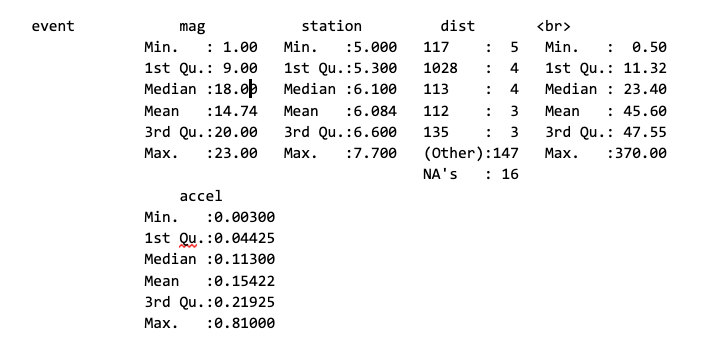
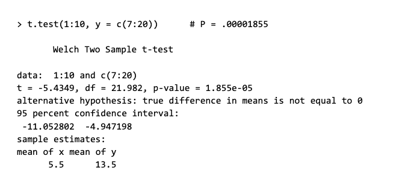
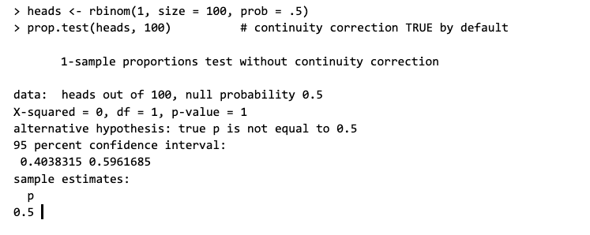
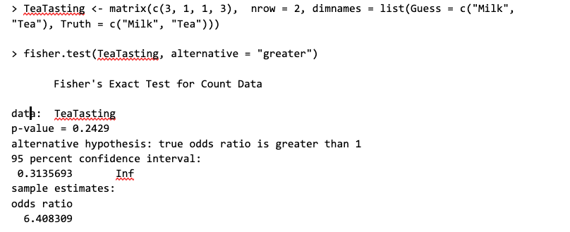
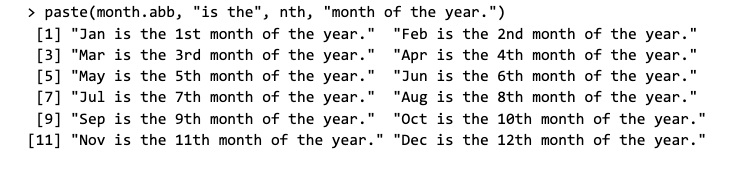
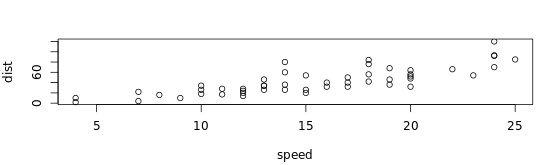
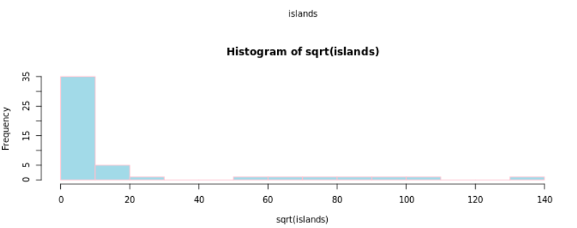
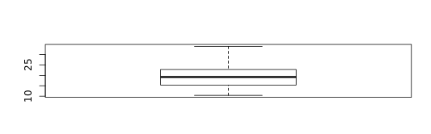
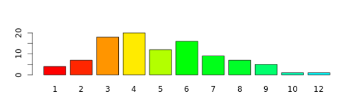

Guia de referência R

| Função | Uso | Principais Argumentos | Exemplo |
|---|---|---|---|
| ls | retorna um vetor de cadeias de caracteres listando os objetos do workspace | nome - qual ambiente usar para listar os objetos disponíveis. | > ls(pattern = "O") [1] character(0) |
| rm | remove e rm podem ser usados para remover objetos. | x - objetos a serem removidos, como nomes (sem aspas) ou cadeias de caracteres (entre aspas) | > tmp <- 1:4 ## work with tmp and cleanup > rm(tmp) |
| help | exibe um arquivo de ajuda da função | topic - nome ou sequência de caracteres especificando o tópico para o qual a ajuda é solicitada; package - nome ou vetor de caractere que fornece os pacotes para procurar documentação. | > help(help) |
| args | exibe os nomes dos argumentos e os valores padrão correspondentes de uma função ou primitiva. | name - uma função (um fechamento ou uma primitiva). Se nome é uma cadeia de caracteres, a função com esse nome é encontrada e usada. | > args(1:10) [1] NULL |
| library | Adiciona à memória as funcionalidades de um pacote | package, help - nome de um pacote. |
> library(splines) |
| install.packages | Baixa um pacote do repositório de pacotes do R | pkgs - vetor de caracteres dos nomes dos pacotes cujas versões atuais devem ser baixadas dos repositórios. | > install.packages(c("ncdf4", "RNetCDF"), configure.args = c(RNetCDF = "--with-netcdf-include=/usr/include/udunits2")) |
| Função | Uso | Principais Argumentos | Exemplo |
|---|---|---|---|
| abs | calcula módulo | x- um vetor ou matriz numérica ou complexa | > abs(-1:1) [1] 1 0 1 |
| choose | calcula combinação | a, b - vetores numéricos não negativos; x, n - vetores numéricos; k, deriv -vetores inteiros | > choose(5, 2) [1] 10 |
| exp | exponencial de x | x - um vetor numérico ou complexo; base - um número positivo ou complexo: a base em relação à qual os logaritmos são calculados | > log(exp(3)) [1] 3 |
| factorial | calcula fatorial de x | x - um vetor numérico | > factorial(100) [1] 9.332622e+157 |
| is.infinite | calcula se a/b é infinito | x - Objeto R a ser testado: os métodos padrão lidam com vetores atômicos | > isfinite(pi/ 0) [1] TRUE |
| cos | calcula cosseno de x radianos | x - vetor numérico ou complexo | > cos(2*pi) [1] 0 |
| sin | calcula seno de x radianos | x - vetor numérico ou complexo | > sin(2*pi) [1] 1 |
| log | calcula log de x na base 10 | x - um vetor numérico ou complexo; base - um número positivo ou complexo: a base em relação à qual os logaritmos são calculados | > log10(1e7) [1] 7 |
| round | arredonda x com aproximação de n casas decimais | x - numérico a ser arredondado; n - indicando dígitos decimais | > round(.5 + -2:4) [1] -2 0 0 2 2 4 4 |
| Função | Uso | Principais Argumentos | Exemplo |
|---|---|---|---|
| mean | Calcula média dos valores de x | x - objeto R; trim - fração (0 a 0,5) a ser cortada de cada extremidade de x; na.rm - valor lógico indicando se os valores de NA devem ser removidos antes que o cálculo prossiga. | > x <- c(rnorm(900), rnorm(100, sd = 1000)) > mean(x) [1] -5.071665 > mean(x, trim = 0.1) [1] 0.01834888 |
| sd | Calcula desvio padrão dos valores de x | x - objeto R na.rm - valor lógico indicando se os valores de NA devem ser removidos antes que o cálculo prossiga |
> sd(1:2) ^ 2 [1] 0.5 |
| Var | calcula variância dos valores de x | x - objeto R; na.rm - valor lógico indicando se os valores de NA devem ser removidos antes que o cálculo prossiga | > var(1:10) [1] 9.166667 > var(1:5, 1:5) [1] 2.5 |
| Median | Calcula mediana dos valores de x | x - objeto R; na.rm - valor lógico indicando se os valores de NA devem ser removidos antes que o cálculo prossiga | > median(1:4) [1] 2.5 |
| range | Calcula amplitude dos valores de x | x - objeto R; na.rm - valor lógico indicando se os valores de NA devem ser removidos antes que o cálculo prossiga |
> r.x <- range(stats::rnorm(100)) [1] -3.081389 2.158902 |
| min/max | Calcula o mínimo/máximo dos valores de x | x - objeto R; na.rm - valor lógico indicando se os valores de NA devem ser removidos antes que o cálculo prossiga | > vector<- c(1,7,3,5,19) > max(vector) [1] 19 |
| quantile | Calcula quantis dos valores de x | x - objeto R; type - número inteiro entre 1 e 9 selecionando um dos nove algoritmos quantílicos detalhados abaixo a serem usados | > quantile(x <- rnorm(1001)) 0% 25% 50% 75% 100% ) -2.66691700 -0.74716267 -0.02535173 0.70762213 3.46980464 |
| IQR | Calcula amplitude do intervalo interquartil dos valores de x | x- um vetor numérico; tipo - um número inteiro selecionando um dos muitos algoritmos quantílicos | > IQR(rivers) [1] 370 |
| table | Tabela de valores de x | y - um vetor numérico; x - objeto R arbitrário ou um objeto herdado da classe "tabela" para o método as.data.frame); stringsAsFactors - caso true , os fatores de classificação devem ser retornados como fatores (o padrão) ou vetores de caracteres? | > require(stats) # for rpois and xtabs > table(rpois(100, 5)) ## Simple frequency distribution 0 1 2 3 4 5 6 7 8 9 10 13 [1] 1 3 9 12 13 23 12 9 9 5 1 3 |
| summary(x) | Retorna resumo de estatísticas descritivas | y - objeto para o qual um resumo é desejado; x - resultado do método padrão de summary () |  |
| Função | Uso | Principais Argumentos | Exemplo |
|---|---|---|---|
| cor | correlação entre var1 e var2 calculada por método(Spearman,Kendall ou Pearson) | x - vetor numérico, matriz ou quadro de dados; y - NULL (padrão) ou um vetor, matriz ou quadro de dados com dimensões compatíveis para x | > cor(1:10, 2:11) [1] 1 |
| t.test | realiza o teste t-Student para uma ou duas amostras utlizando opções(alternative,mu,paired,var.equal,conf.level) | x- vetor numérico (não vazio) de valores de dados; y - um vetor numérico opcional (não vazio) de valores de dados |  |
| prop.test | realiza o teste de proporções para uma ou duas amostras utilizando opções(correct,alternative,conf.level) | x - vetor numérico, matriz ou quadro de dados y - NULL (padrão) ou um vetor, matriz ou quadro de dados com dimensões compatíveis para x na.rm - caso true, valores ausentes devem ser removidos use - uma cadeia de caracteres opcional que fornece um método para calcular covariâncias na presença de valores ausentes method - cadeia de caracteres indicando qual coeficiente de correlação (ou covariância) deve ser calculado v - matriz numérica simétrica, geralmente positiva definida como uma matriz de covariância |
 |
| fisher.test | realiza o teste exato de independência de linhas e colunas em uma tabela de contingência com as marginais fixas utilizando opções(alternative,conf.int,conf.level) | x - uma tabela de contingência bidimensional em forma de matriz ou um objeto de fator; y - um objeto fator; ignorado se x é uma matriz |  |
| Função | Uso | Principais Argumentos | Exemplo |
|---|---|---|---|
| casefold | coloca as letras de x em minúscula/coloca as letras de x em maiúscula | x - vetor de caractere ou um objeto que pode ser coagido a caractere por as.character; upper - traduzir para maiúsculas ou minúsculas | > x <- "MiXeD cAsE 123" > toupper(x) [1] "MIXED CASE 123" |
| paste | insere caractere no final de cada elemento de x separando por "sep" | x - objeto do tipo string; sep - uma cadeia de caracteres para separar os termos |  |
| substr | extrai do caractere i ao j da string x | x,text - um vetor de caracteres; start - primeiro elemento a ser substituído; finish - último elemento a ser substituído | > substr("abcdef", 2, 4) [1] "bcd" |
| nchar | número de caracteres de x | x x- vetor de caracteres ou um vetor a ser coagido a um vetor de caracteres; type - sequência de caracteres: correspondência parcial a um de c ("bytes", "caracteres", "largura"). Veja detalhes'. | > x <- c("asfef", "qwerty", "yuiop[", "b", "stuff.blah.yech") > nchar(x) [1] 5 6 6 1 15 |
| grep | procura elementos em uma string | pattern - sequência de caracteres que contém uma expressão regular; x, text - um vetor de caractere em que as correspondências são procuradas | > haystack <- c("red", "blue", "green", "blue", "green forest") > grep("green", haystack) [1] 3 5 > grep("r", haystack) # returns position [1] 1 3 5 |
| strsplit | divide os elementos de um vetor de caracteres | x - vetor de caractere, cada elemento do qual deve ser dividido, split - vetor de caractere contendo expressão regular | > x <- "Do you wish you were Mr. Jones?" > strsplit(x, ". ") [1] "D" "yo" "wis" "yo" "wer" "Mr" [7] "Jones?" |
| startsWith | retorna se x começa/termina com com prefixo/sufixo | x - vetor da cadeia de caracteres cujos "começos" são considerados; prefix, sufixo - vetor de caracteres | > startsWith(search(), "package:") # typically at least two FALSE, nowadays often three [1] FALSE TRUE TRUE TRUE TRUE TRUE TRUE TRUE FALSE TRUE |
| cat | concatena strings | x,y... - objetos a serem concatenados; sep - um vetor de caracteres de cadeias para acrescentar após cada elemento | > iter <- stats::rpois(1, lambda = 10) > ## print an informative message > cat("iteration = ", iter <- iter + 1, "\n") iteration = 7 |
| Função | Uso | Principais Argumentos | Uso |
|---|---|---|---|
| plot | função genérica para plotagem de objetos R | x - as coordenadas x dos pontos no gráfico; y - as coordenadas y dos pontos no gráfico | > require(stats) #for cars > plot(cars)  |
| hist | função genérica hist calcula um histograma do valor de dados fornecido | x- vetor de valores para o qual o histograma é desejado; breaks - vetor que fornece os pontos de interrupção entre as células do histograma, função para calcular o vetor de pontos de interrupção, único número fornecendo o número de células para o histograma ou uma sequência de caracteres que nomeia um algoritmo para calcular o número de células | >hist(sqrt(islands), breaks = 12, col = "lightblue", border = "pink")  |
| boxplot | produza gráficos de caixa dos valores fornecidos | x - dados a partir dos quais os gráficos de caixa devem ser produzidos; formula - fórmula, como y ~ grp, em que y é um vetor numérico de valores de dados a ser dividido em grupos de acordo com a variável de agrupamento grp | >boxplot(mtcars$mpg)  |
| barplot | cria uma plotagem de barras com barras verticais ou horizontais | data - quadro de dados (ou lista) do qual as variáveis na fórmula devem ser obtidas; height - vetor ou matriz de valores descrevendo as barras que compõem o gráfico; width - vetor opcional de larguras de barra | > tN <- table(Ni <- stats::rpois(100, lambda = 5)) > r <- barplot(tN, col = rainbow(20))  |
| Função | Uso | Principais Argumentos | Exemplo |
|---|---|---|---|
| read.csv | leitura de um arquivo no formato de tabela e cria um quadro de dados a partir dele, com casos correspondentes a linhas e variáveis para os campos no arquivo. | file - nome do arquivo do qual os dados devem ser lidos; header - valor lógico indicando se o arquivo contém os nomes das variáveis como sua primeira linha; sep - o caractere separador de campo | test1 <- c(1:5, "6,7", "8,9,10") > tf <- tempfile() > writeLines(test1, tf) > read.csv(tf, fill = TRUE) X1 1 2 2 3 3 4 4 5 5 6 6 7 7 8 8 9 9 10 |
| read.table | leitura de um arquivo no formato de tabela e cria um quadro de dados a partir dele, com casos correspondentes a linhas e variáveis para os campos no arquivo | file - nome do arquivo do qual os dados devem ser lidos; header - valor lógico indicando se o arquivo contém os nomes das variáveis como sua primeira linha; sep - o caractere separador de campo | > read.table(header = TRUE, text = "a b 1 2 3 4")) a b 1 1 2 2 3 4 |
| data | carrega os conjuntos de dados especificados ou lista os conjuntos de dados disponíveis | x - cadeias de caracteres literais ou nomes, data - um vetor de caractere que fornece o pacote para procurar conjuntos de dados | > data(USArrests, "VADeaths") # load the data sets 'USArrests' and 'VADeaths' |
| write.table | imprime o argumento necessário x | x - objeto a ser escrito, de preferência uma matriz ou quadro de dados; file - sequência de caracteres nomeando um arquivo ou uma conexão aberta para gravação | > x <- data.frame(a = I("a \" quote"), b = pi) > write.table(x, file = "foo.csv", sep = ",", col.names = NA, qmethod = "double") ## To write a CSV file for input to Excel one might use |
| write.csv | imprime o argumento necessário x | x - objeto a ser escrito, de preferência uma matriz ou quadro de dados; file - sequência de caracteres nomeando um arquivo ou uma conexão aberta para gravação | > write.csv(x, file = "foo.csv") ### alternatively |
Desenvolvido por
Manoela Gomes
15/12/2019
Ribeirão Preto
Funções e exemplos retirados do site :
RDocumentation